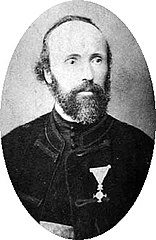
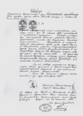

Никола Те́сла (серб. Никола Те́сла, англ. Nikola Tesla; 10
июля 1856, Смилян, Госпич, Австрийская империя — 7 января 1943,
Нью-Йорк, Нью-Йорк, США) — изобретатель в области электротехники и
радиотехники сербского происхождения, учёный, инженер, физик. Родился
в Австрийской империи, вырос в Австро-Венгрии, в последующие годы в
основном работал во Франции и США. В 1891 году получил гражданство
США.
Это аудиостатья. Кликните, чтобы прослушатьПрослушать введение в
статью МЕНЮ0:00 Аудиозапись создана на основе версии статьи от 11
октября 2021 года Широко известен благодаря своему вкладу в создание
устройств, работающих на
переменном токе , многофазных систем,
синхронного генератора
и
асинхронного электродвигателя асинхронного электродвигателя, позволивших
совершить так называемый
второй этап промышленной революции.
Также он известен как сторонник теории о существовании эфира —
благодаря своим многочисленным опытам и экспериментам, имевшим целью
показать наличие эфира как особой формы материи, поддающейся
использованию в технике.
В честь изобретателя названа единица измерения плотности магнитного
потока (магнитной индукции) — тесла.
Среди многих наград — медали Эллиота Крессона, Джона Скотта, Томаса
Эдисона. Современники-биографы называют Теслу «человеком, который
изобрёл XX век» и «святым заступником» современного электричества.
После демонстрации
радио
и победы в
«Войне токов»
Тесла получил повсеместное признание как выдающийся
инженер-электротехник и изобретатель.
Ранние работы Теслы проложили путь современной электротехнике, его
открытия раннего периода имели инновационное значение. В США по
известности Тесла мог конкурировать с любым изобретателем или учёным в
истории, а также в массовой культуре.
Биография
Ранние годы
Семья Теслы жила в селе Смилян в 6 км от города Госпич, главного города исторической провинции Лика, входившей в то время в состав Австрийской империи. Отец — Милутин Тесла (1819—1879), священник Сремской епархии сербской православной церкви, серб. Мать — Георгина (Джука) Тесла (1822—1892), в девичестве Мандич, была дочерью священника. 10 июля 1856 года в семье появился четвёртый ребёнок — Никола. Всего в семье было пять детей: три дочери — Милка, Ангелина и Марица и два сына — Никола и его старший брат Дане. Когда Николе было пять лет, его брат погиб, упав с коня. Первый класс начальной школы Никола закончил в Смилянах. В 1862 году, вскоре после гибели Дане, отец семейства получил повышение сана, и семья Теслы переехала в Госпич, где Никола завершил оставшиеся три класса начальной школы, а затем и трёхлетнюю нижнюю реальную гимназию, которую окончил в 1870 году. Осенью того же года Никола поступил в Высшее реальное училище в городе Карловац. Он жил в доме у своей тёти, двоюродной сестры отца, Станки Баранович. В июле 1873 года Н. Тесла получил аттестат зрелости. Несмотря на наказ отца, Никола вернулся к семье в Госпич, где была эпидемия холеры, и тут же заразился. Вот что рассказывал об этом сам Тесла: Мне с детства была предназначена стезя священника. Эта перспектива, как чёрная туча, висела надо мной. Получив аттестат зрелости, я оказался на распутье. Должен ли я ослушаться отца, проигнорировать полные любви пожелания матери или подчиниться судьбе? Эта мысль угнетала меня, и в будущее я смотрел со страхом. Я глубоко уважал своих родителей, поэтому решил заниматься духовными науками. Именно тогда разразилась ужасная эпидемия холеры, которая выкосила десятую часть населения. Вопреки не допускавшим возражений приказам отца я помчался домой, и болезнь подкосила меня. Позже холера привела к водянке, проблемам с лёгкими и прочим заболеваниям. Девять месяцев в постели, почти без движения, казалось, истощили все мои жизненные силы, и врачи отказались от меня. Это был мучительный опыт не столько из-за физических страданий, сколько из-за моего огромного желания жить. Во время одного из приступов, когда все думали, что я умираю, в комнату стремительно вошёл мой отец, чтобы поддержать меня такими словами: «Ты поправишься». Как сейчас вижу его мертвенно-бледное лицо, когда он пытался ободрить меня тоном, противоречащим его заверениям. «Может быть, — ответил я — мне и удастся поправиться, если ты позволишь мне изучать инженерное дело». «Ты поступишь в лучшее учебное заведение в Европе», — ответил он торжественно, и я понял, что он это сделает. С моей души спал тяжкий груз. Но утешение могло прийти слишком поздно, если бы меня удивительным образом не вылечила одна старая женщина с помощью отвара из бобов. В этом не было силы внушения или таинственного воздействия. Средство от болезни было в полном смысле целебным, героическим, если не отчаянным, но оно возымело действие.
Выздоровевшего Николу Теслу должны были вскоре призвать на трёхлетнюю службу в Австро-Венгерской армии. Родственники сочли его недостаточно здоровым и спрятали в горах. Назад он вернулся лишь в начале лета 1875 года. В том же году Никола поступил в высшее техническое училище в Граце (в настоящее время — Грацский технический университет), где стал изучать электротехнику. Наблюдая за работой машины Грамма на лекциях по электротехнике, Тесла пришёл к мысли о несовершенстве машин постоянного тока, однако профессор Яков Пешль подверг его идеи резкой критике, перед всем курсом прочитав лекцию о неосуществимости использования переменного тока в электродвигателях. На третьем курсе Тесла увлёкся азартными играми, проигрывая в карты большие суммы денег. В своих воспоминаниях Тесла писал, что им двигало «не только желание развлечься, но и неудачи в достижении намеченной цели»[12]. Выигрыши он всегда раздавал проигравшим, за что вскоре прослыл чудаком. В конце концов он настолько сильно проигрался, что его матери пришлось взять в долг у своей приятельницы. С тех пор он никогда больше не играл. 17 (29) апреля 1879 умер отец Николы. Тесла устроился преподавателем в реальную гимназию в Госпиче, ту, в которой он учился. Работа в Госпиче его не устраивала. У семьи было мало денег, и только благодаря финансовой помощи от двух своих дядей, Петара и Павла Мандич, молодой Тесла смог в январе 1880 года уехать в Прагу, где поступил на философский факультет Пражского университета. Он проучился всего один семестр и был вынужден искать работу.
|  |  | ||
|---|---|---|---|
| Милутин Тесла, сербский священник, отец Николы | Свидетельство о крещении Николы Теслы | Тесла в сербском национальный костюме Лики, 1880 год | Первая страница паспорта Николы Теслы, выданного в Королевстве Хорватия и Славония в 1883 году |
Австро-Венгрия, Германия и Франция

До 1882 года Тесла работал инженером-электриком в правительственной телеграфной компании в Будапеште, которая в то время занималась проведением телефонных линий и строительством центральной телефонной станции. В феврале 1882 года Тесла придумал, как можно было бы использовать в электродвигателе явление, позже получившее название вращающегося магнитного поля. Работа в телеграфной компании не давала Тесле осуществить свои замыслы по созданию электродвигателя переменного тока. В конце 1882 года он устроился в Континентальную компанию Эдисона (Continental Edison Company) в Париже. Одной из наиболее крупных работ компании было сооружение электростанции для железнодорожного вокзала в Страсбурге. В начале 1883 года компания направила Николу в Страсбург для решения ряда рабочих проблем, возникших при монтаже осветительного оборудования новой железнодорожной станции. В свободное время Тесла работал над изготовлением модели асинхронного электродвигателя. В 1883 году работа двигателя была продемонстрирована в мэрии Страсбурга. К весне 1884 года работы на страсбургской ж/д станции были закончены, и Тесла вернулся в Париж, ожидая от компании премии в размере 25 тысяч долларов. Попробовав получить причитающиеся ему премиальные, он понял, что этих денег ему не видать и, оскорблённый, уволился[12]. Один из советских биографов изобретателя Б. Н. Ржонсницкий[b] утверждает, что Тесла задумывался о переезде в Россию, однако один из администраторов Континентальной компании Чарльз Бечлор (англ.) уговорил Теслу отправиться в США. Бечлор написал рекомендательное письмо своему другу Томасу Эдисону[12]: «Было бы непростительной ошибкой дать возможность уехать в Россию подобному таланту. Вы ещё будете мне благодарны, мистер Эдисон, за то, что я не пожалел нескольких часов для убеждения этого молодого человека отказаться от мысли ехать в Петербург. Я знаю двух великих людей — один из них вы, второй — этот молодой человек.»
Америка
Работа у Эдисона
6 июля 1884 года Тесла прибыл в Нью-Йорк[15]. Он устроился на работу в компанию Томаса Эдисона (Edison Machine Works) в качестве инженера по ремонту электродвигателей и генераторов постоянного тока. Эдисон довольно холодно воспринимал новые идеи Теслы и всё более открыто высказывал неодобрение направлением личных изысканий изобретателя. Весной 1885 года Эдисон пообещал Тесле 50 тысяч долларов, если у него получится конструктивно улучшить электрические машины постоянного тока, придуманные Эдисоном[16]. Никола активно взялся за работу и вскоре представил 24 разновидности машины Эдисона, новый коммутатор и регулятор, значительно улучшающие эксплуатационные характеристики. Одобрив все усовершенствования, в ответ на вопрос о вознаграждении Эдисон отказал Тесле, заметив, что иммигрант пока плохо понимает американский юмор. Оскорблённый Тесла немедленно уволился[c].
Лаборатория в Нью-Йорке
Проработав всего год в компании Эдисона, Тесла приобрёл известность в инженерных кругах. Узнав о его увольнении, группа электротехников предложила Николе организовать свою компанию, связанную с вопросами электрического освещения. Проекты Теслы по использованию переменного тока их не воодушевили, и тогда они изменили первоначальное предложение, ограничившись лишь предложением разработать проект дуговой лампы для уличного освещения. Через год проект был готов. Вместо денег предприниматели предложили изобретателю часть акций компании, созданной для эксплуатации новой лампы. Такой вариант не устроил изобретателя, компания же в ответ постаралась избавиться от него, попытавшись оклеветать и опорочить Теслу[12]. В 1886 году с осени и до весны изобретатель вынужден был перебиваться на подсобных работах. Он занимался рытьём канав, «спал, где придётся, и ел, что найдёт». В этот период он подружился с находившимся в подобном же положении инженером Брауном, который смог уговорить нескольких своих знакомых оказать финансовую поддержку Тесле. В апреле 1887 года созданная на эти деньги «Tesla Electric Company» начала заниматься обустройством уличного освещения новыми дуговыми лампами. Вскоре перспективность компании была доказана большими заказами из многих городов США. Для самого изобретателя компания была лишь средством к достижению заветной цели[12]. Под офис своей компании в Нью-Йорке Тесла снял дом на Пятой авеню неподалёку от здания, занимаемого компанией Эдисона. Между двумя компаниями развязалась острая конкурентная борьба, известная под названием «Война токов». В июле 1888 года известный американский промышленник Джордж Вестингауз выкупил у Теслы более 40 патентов, заплатив в среднем по 25 тысяч долларов за каждый. Вестингауз также пригласил изобретателя на должность консультанта на заводах в Питтсбурге, где разрабатывались промышленные образцы машин переменного тока. Работа не приносила изобретателю удовлетворения, мешая появлению новых идей. Несмотря на уговоры Вестингауза, через год Тесла вернулся в свою лабораторию в Нью-Йорке. Вскоре после возвращения из Питтсбурга Никола Тесла съездил в Европу, где посетил парижскую Всемирную выставку 1889 года и навестил мать и сестру Марицу[12]. В 1888—1895 годах Тесла занимался исследованиями магнитных полей высокой частоты. Эти годы были наиболее плодотворными: он получил множество патентов на изобретения. Руководство Американского института электроинженеров[en] пригласило Теслу прочитать лекцию о своих работах. 20 мая 1892 года он выступил перед выдающимися электротехниками того времени и имел большой успех. 13 марта 1895 года в лаборатории на Пятой авеню случился пожар. Здание сгорело до основания, уничтожив самые последние достижения изобретателя: механический осциллятор, стенд для испытаний новых ламп для электрического освещения, макет устройства для беспроводной передачи сообщений на дальние расстояния и установку для исследования природы электричества. Сам Тесла заявил, что по памяти может восстановить все свои открытия. Финансовую помощь изобретателю оказала «Компания Ниагарских водопадов[en]». Благодаря Эдварду Адамсу[en] у Теслы появилось 100 000 долларов на обустройство новой лаборатории. Уже осенью исследования возобновились по новому адресу: Хаустон-стрит, 46. В конце 1896 года Тесла добился передачи радиосигнала на расстояние 30 миль (48 км)[12].
Колорадо-Спрингс
18 мая 1899 года по приглашению местной электрической компании Тесла переехал в курортный городок Колорадо-Спрингс, в котором пробыл почти год. Он остановился в отеле «Alta Vista», где и разместил свой офис[17]. 2 июня 1899 года Тесла завершил строительство деревянного ангара площадью примерно 50 на 60 футов (15 на 18 метров), около 18 футов высотой (5,4 метра), с двумя окнами и большой дверью[17]. В конце июля Тесла уже проводил различные эксперименты в обстановке полной секретности, не допуская в свою лабораторию никого, кроме своих помощников. Он проводил опыты главным образом ночью вследствие доступности электрической энергии, которую получал от городской электрической компании[17]. Во время работы в своей лаборатории, Тесла разработал конструкцию большого высокочастотного излучателя с тремя колебательными контурами, потенциал которых достигал 10 миллионов вольт, опробовал различные варианты приёмных устройств с одним или двумя когерерами со специальными контурами смещённого возбуждения, производил измерения электромагнитного излучения электрических разрядов в природе, разработал измерительные методики в радиотехнике, продумывал устройства модулятора, антенн с параллельным питанием и т. д. Он также изложил свою теорию образования шаровых молний и мог создавать их искусственным путём[17]. Описания научных исследований и наблюдения в лаборатории в Колорадо-Спрингс Никола Тесла заносил в дневник, который позднее был опубликован под названием «Colorado Springs Notes, 1899–1900[en]». Судя по записям в дневнике, Тесла посвящал бóльшую часть своего времени (около 56 %) передающему устройству, в частности генератору высокочастотных токов большой мощности, далее приёмникам слабых сигналов (приблизительно 21 %), измерению ёмкости вертикальной однополюсной антенны (около 16 %), и другим различным научным изысканиям и исследованиям (примерно 6 %)[17]. 11 января 1900 года Тесла вернулся в Нью-Йорк[17].
Башня Теслы
Основная статья: Башня ВорденклифБашня Теслы — первая беспроводная телекоммуникационная башня Николы Теслы для коммерческой трансатлантической телефонии, радиовещания и демонстрации беспроводной передачи электроэнергии[18][19]. Первые полномасштабные испытания башни-резонатора прошли 15 июня 1903 года ровно в полночь по местному времени[20].
Смерть
Осенью 1937 года в Нью-Йорке 81-летний Тесла вышел из отеля «Нью-Йоркер», чтобы, как обычно, покормить голубей у собора и библиотеки. Переходя улицу в паре кварталов от отеля, Тесла не смог увернуться от движущегося такси и упал, получив травму спины и перелом трёх рёбер. Тесла отказался от услуг врача, чему следовал и прежде, и так полностью не оправился[21][22]. Происшествие вызвало острое воспаление лёгких, перешедшее в хроническую форму. Тесла оказался на несколько месяцев прикован к постели и смог снова встать в начале 1938 года.В Европе началась война. Тесла глубоко переживал за свою родину, оказавшуюся в оккупации, неоднократно обращаясь с горячими призывами в защиту мира ко всем славянам (в 1943 году, уже после его смерти, первой гвардейской дивизии народно-освободительной армии Югославии за проявленное мужество и героизм было присвоено имя Николы Теслы). 1 января 1943 года Элеонора Рузвельт, супруга президента США, выразила пожелание навестить больного Теслу. Племянник Теслы Сава Косанович, посетил его 5 января и договорился о встрече. Он был последним, кто общался с Теслой[12]. Никола Тесла скончался в занимаемом им номере отеля «Нью-Йоркер» в ночь с 7 на 8 января 1943 года, на 87-м году жизни. Тело обнаружила 8 января горничная Алиса Монахэн (англ. Alice Monaghan), которая вошла в комнату вопреки вывешенной Теслой ещё 5 января табличке «не беспокоить». По заключению коронера, смерть наступила около 22:30 EST, предположительно от коронарного тромбоза[23]. 12 января тело кремировали, и урну с прахом установили на Фернклиффском кладбище в Нью-Йорке[24]. В 1957 году она перенесена в Музей Николы Теслы в Белграде[25].
Гипотезы и легенды
Ореол, окружающий личность и открытия Теслы, способствовал распространению всевозможных утверждений, носящих, как правило, полумифический характер. Подобные утверждения не поддаются проверке по причине отсутствия документов, что не мешает, однако, приписывать Тесле прямое или косвенное отношение ко многим загадкам XX века[26][27].
Бумаги и личные вещи

По легенде, после смерти Теслы спецотдел ФБР, занимавшийся хранением собственности иностранных граждан (англ. Alien Property Custodian), выслал сотрудников, которые изъяли все бумаги, найденные ими в номере. ФБР подозревало, что ещё за несколько лет до смерти Теслы некоторые бумаги были выкрадены германской разведкой и могли быть использованы для создания немецких летающих тарелок[28]. Желая предотвратить повторение этого инцидента, ФБР засекретило все обнаруженные ими бумаги. В книге[28] писателя Тима Шварца упоминается, что в других отелях, где Тесла снимал номера, также оставались его личные вещи. Часть из них утеряны, более 12 ящиков с вещами были проданы для оплаты счетов Теслы. Также Тим Шварц уверяет, что в 1976 году четыре невзрачных коробки с бумагами были выставлены на аукционе неким Майклом Борнесом (Michael P. Bornes), книготорговцем из Манхеттена. Дейл Элфри (Dale Alfrey) приобрёл их за 25 долларов, не зная, что это за бумаги. Согласно автору книги, позже выяснилось, что это лабораторные журналы и бумаги Николы Теслы, в которых описывались враждебные инопланетные существа, способные контролировать человеческий мозг[28].
«Филадельфийский эксперимент»
Основная статья: Филадельфийский эксперимент Говорить о непосредственном участии Теслы в этом гипотетическом событии вряд ли возможно по причине несовпадения дат жизни Теслы и времени проведения предполагаемого эксперимента, поскольку сам Тесла умер ещё до его начала — 7 января 1943 года, в то время как предполагается, что эксперимент был проведён только 28 октября 1943 года.
Электромобиль Теслы
Основная статья: Nikola Tesla electric car hoax В 1931 году Никола Тесла якобы продемонстрировал действующий прототип электромобиля, движущегося без каких-либо традиционных источников тока. Никаких материальных свидетельств существования этого электроавтомобиля не существует.
Лучевое оружие
Американское агентство DARPA в 1958 году якобы попыталось[30] создать легендарные «лучи смерти» Теслы в ходе проекта «Качели» (англ. Seesaw), который проводился в Ливерморской национальной лаборатории. В 1982 году проект был прерван в связи с рядом неудач и превышением бюджета[31].«Тунгусский метеорит»и
Основная статья: Тунгусский метеорит В конце XX — начале XXI века появилась гипотеза о связи Николы Теслы с Тунгусским метеоритом[d]. Согласно этой гипотезе, в день наблюдения Тунгусского феномена (30 июня 1908 года) Никола Тесла проводил опыт по передаче энергии «по воздуху». За несколько месяцев до взрыва Тесла утверждал, что сможет осветить дорогу к Северному полюсу экспедиции знаменитого путешественника Роберта Пири. Кроме того, сохранились записи в журнале библиотеки Конгресса США, что он запрашивал карты «наименее заселённых частей Сибири». Его эксперименты по созданию стоячих волн, когда, как утверждается, мощный электрический импульс сконцентрировался за десятки тысяч километров в Индийском океане, вполне вписываются в эту «гипотезу». Если Тесле удалось накачать импульс энергией так называемого «эфира» (гипотетическая среда, которой, по научным представлениям прошлых столетий, приписывалась роль переносчика электромагнитных взаимодействий) и эффектом резонанса «раскачать» волну, то, согласно данному предположению, должен был возникнуть разряд мощностью, сопоставимой с ядерным взрывом.
Наследие
Изобретения и научные работы
Всего у Теслы насчитывается больше 700 изобретений и патентов, некоторые из которых являются важнейшими историческими вехами современного электричества. Вероятно, Тесла придумал радио раньше Маркони и Попова, а также работал с рентгеновскими лучами до их официального открытия Вильгельмом Рентгеном[33].
Переменный ток
Работая на Вестингауза, запатентовал применение многофазных систем переменного тока. До изобретения асинхронного (индукционного) двигателя переменный ток не находил широкого применения, поскольку не мог использоваться в ранее существовавших электродвигателях. С 1889 года Никола Тесла приступил к исследованиям токов высокой частоты и высоких напряжений. Изобрёл первые образцы электромеханических генераторов ВЧ (в том числе индукторного типа) и высокочастотный трансформатор (трансформатор Теслы, 1891), создав тем самым предпосылки для развития новой отрасли электротехники — техники ВЧ. В ходе исследований токов высокой частоты Тесла уделял внимание и вопросам безопасности. Экспериментируя на своём теле, он изучал влияние переменных токов различной частоты и силы на человеческий организм. Многие правила, впервые разработанные Теслой, вошли в современные основы техники безопасности при работе с ВЧ-токами. Он обнаружил, что при частоте тока свыше 700 Гц электрический ток протекает по поверхности тела, не нанося вреда тканям организма. Электротехнические аппараты, разработанные Теслой для медицинских исследований, получили широкое распространение в мире. Эксперименты с высокочастотными токами большого напряжения привели изобретателя к открытию способа очистки загрязнённых поверхностей. Аналогичное воздействие токов на кожу показало, что таким образом возможно удалять мелкую сыпь, очищать поры и убивать микробов. Данный метод используется в современной электротерапии.
Теория полей
12 октября 1887 года Тесла дал строгое научное описание сути явления вращающегося магнитного поля. 1 мая 1888 года Тесла получил свои основные патенты на изобретение многофазных электрических машин (в том числе асинхронного электродвигателя) и системы передачи электроэнергии посредством многофазного переменного тока. С использованием двухфазной системы, которую он считал наиболее экономичной, в США был пущен ряд промышленных электроустановок, в том числе Ниагарская ГЭС (1895), крупнейшая в те годы[12].
Радиосвязь
В 1891 году на публичной лекции Тесла описал и продемонстрировал принципы радиосвязи. Тесла одним из первых запатентовал способ надёжного получения токов, которые могут быть использованы в радиосвязи. Патент U.S. Patent 447 920, выданный в США 10 марта 1891 года, описывал «Метод управления дуговыми лампами» («Method of Operating Arc-Lamps»), в котором генератор переменного тока производил высокочастотные (по меркам того времени) колебания тока порядка 10 000 Гц. Запатентованной инновацией стал метод подавления звука, производимого дуговой лампой под воздействием переменного или пульсирующего тока, для чего Тесла придумал использовать частоты, находящиеся за рамками восприятия человеческого слуха. По современной классификации генератор переменного тока работал в интервале очень низких радиочастот. В 1893 году учёный вплотную занялся вопросами беспроволочной связи и изобрёл мачтовую антенну.
Награды
- Кавалер черногорского Ордена князя Данило I 2-й степени (1895).
- Кавалер Большого креста Ордена Белого льва (Чехословакия) (1891),
- Медаль Эллиота Крессона (1894),
- Медаль Эдисона (AIEE, 1916),
- Медаль Джона Скотта (1934)
Увековечение памяти
- Именем Теслы названа единица измерения магнитной индукции в международной системе единиц СИ.
- Аэропорту в белградском пригороде Сурчин присвоено имя Николы Теслы.
- В Хорватии, в курортном городе Пореч (хорв. Poreč), расположенном на западном побережье полуострова Истрия, есть набережная имени Николы Теслы.
- Именем Теслы названы улицы в Загребе, Шибенике, Сплите, Риеке, Вараждине, Будве (Черногория), Москве (ИЦ «Сколково»)[34], Екатеринбурге[34], Теремах[34], Ложке[34], Нур-Султане[35], Минске.
- Памятники Тесле установлены около здания Белградского университета, Международного аэропорта Белграда, Храма Воскресения Христова в Подгорице, а также в городах: Нью-Йорк (США), Ниагара-Фолс (США), Прага (Чехия), Чебоксары (Россия), столице Азербайджана — Баку[36].
- В 1970 году Международный астрономический союз присвоил имя Теслы кратеру на обратной стороне Луны.
- Его именем назван астероид (2244) Тесла.
Музеи
- Музей Николы Теслы (расположен в центральной части Белграда).
- Электрический музей Николы Теслы в Сочи (ул. Международная, 6).
- Благодаря выделенному к 2020 году гранту ($750 000), Научный центр Теслы в Ворденклифе (англ.) (Нью-Йорк, США) превратит одну лабораторию в музей Теслы и его наследия, а также образовательно-исследовательский центр; одновременно будет создана соответствующая программа в области предпринимательства и технологий[37].
В массовой культуре
Кинематограф
- 1980 — Биографии Теслы посвящён художественный фильм Крсто Папича «Тайна Николы Теслы» («Tajna Nikole Tesle»), снятый в Югославии.
- 2006 — в фильме Кристофера Нолана «Престиж», снятому по одноимённой книге Кристофера Приста, одну из основных ролей — Николы Теслы — исполнил Дэвид Боуи.
- 2007 — документальный фильм «Никола Тесла: Властелин мира»
- 2008—2011 — в сериале «Убежище» роль Теслы исполняет Джонатон Янг. Особенность этого фильма в том, что Тесла в нём ещё и (полу)вампир.
- 2011 — докудрама «Свободная энергия Теслы» (Украина). В главной роли Виктор Кузнецов.
- 2015 — сериал «Nikola Tesla and the End of the World», где героиня Софи Кларк случайно переносит Николу Теслу в современный Лондон[38].
- 2017 — «Война токов», в роли Николы Теслы — Николас Холт.
- 2020 — «Тесла», в роли Николы Теслы — Итан Хоук.
- 2020 — Никола Тесла появляется в 4 серии 12 сезона сериала «Доктор Кто» под названием «Ночь ужасов Николы Теслы» в исполнении Горана Вишнича.
- 2021[39] — «Тесла» выйдет как в формате полнометражного художественного фильма, так и в 10-серийной версии. Проект станет фантастическим представлением жизни учёного. Производители: Kinodanz (Россия)[40], «НМГ Студия», Archangel Studios (Сербия)[41] и китайская компания[42]. Деятельное участие принимает актёр и продюсер Милош Бикович[43]. Ожидаемый бюджет — $10 млн.[39].
Компьютерные игры
- 2006 — в стратегии ParaWorld одним из героев является Никола Тесла, переименованный в Николая Таслова.
- 2007 — в игре Team Fortress 2 Никола Тесла нанят как первый инженер команды Синих.
- 2010 — в игре Dark Void Никола Тесла один из главных героев игры, где он находится в альтернативной вселенной.
- 2012 — в квесте «Нэнси Дрю. Смертельное устройство» эксплуатируется личность Николы Теслы.
- 2015 — В игре The Order: 1886 молодой Никола Тесла является инженером при ордене.
- 2018 — В игре Frostpunk Никола Тесла является правителем-диктатором города Теслаград, который, один из немногих, смог пережить Великую Зиму.
- 2020 — В альтернативной вселенной игры Iron Harvest Никола Тесла является создателем управляемых людьми подвижных роботов, которые участвовали в Первой мировой войне.